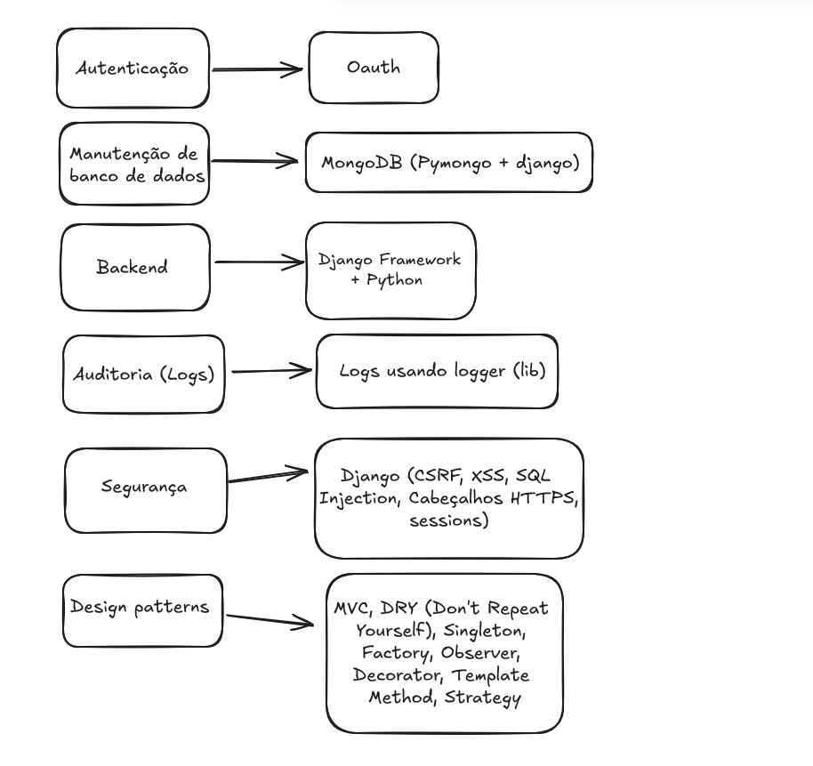
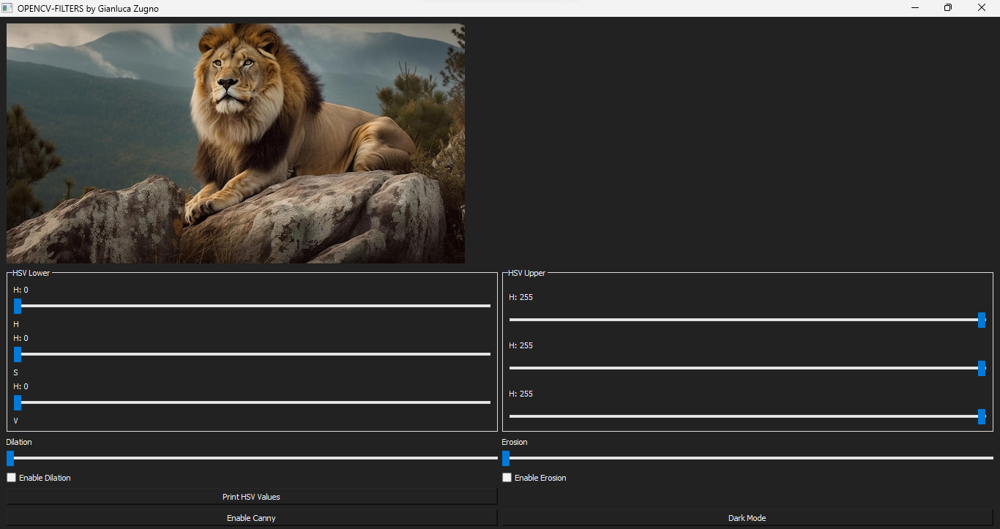

Olá, eu sou Gianluca
Desenvolvedor & Entusiasta de IA
Meus Projetos


Sobre Mim
Olá, sou Gianluca, um apaixonado pela ciência da computação tenho 20 anos de idade. Minha área de foco atual inclui Computer Vision, Machine Learning e Inteligência Artificial.
Estou sempre buscando aprender mais e atualmente estou aprofundando meus conhecimentos em Python e Java. Uma curiosidade interessante sobre mim é que comecei a usar computadores aos 3 anos de idade.